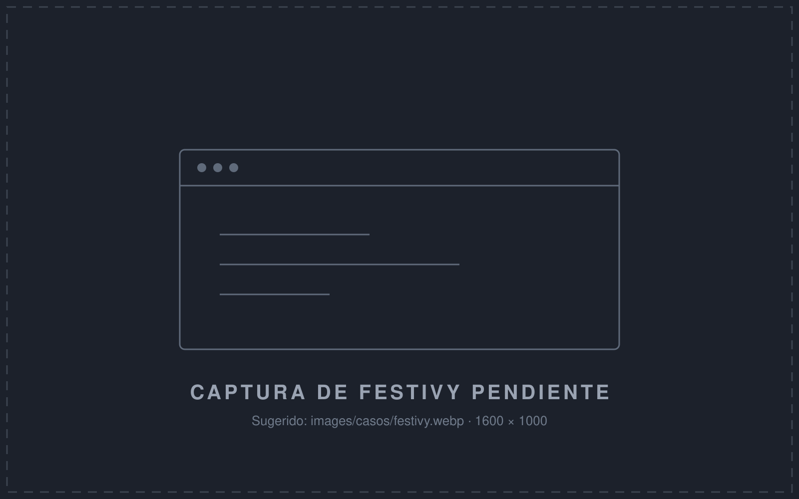

Producto propio · 2026
Festivy
Plataforma para crear y gestionar eventos digitales. Diseñada, construida y lanzada de punta a punta, hoy evolucionando hacia un modelo B2B para organizadores de eventos.
- React
- TypeScript
- Supabase

full stack developer
product builder · Buenos Aires, AR
Desarrollador .NET con más de 15 años en banca, salud, telecomunicaciones y retail. Trabajo freelance, con un flujo de desarrollo asistido por IA que acelera la entrega sin resignar calidad.
Proyectos cerrados o dedicación parcial. Me sumo solo o junto a tu equipo.
De .NET Framework y ASP.NET a .NET moderno, sin frenar la operación del negocio.
Diagnóstico y solución de cuellos de botella en módulos críticos: transacciones, queries, concurrencia.
De la idea a producción, con un backend sólido: multi-tenant, pagos, APIs limpias y testeadas.
Extracción de datos de documentos y automatización de tareas manuales dentro de tus sistemas.
Producto propio · 2026
Plataforma para crear y gestionar eventos digitales. Diseñada, construida y lanzada de punta a punta, hoy evolucionando hacia un modelo B2B para organizadores de eventos.

Hospital Británico · Salud
Grimoldi · Retail
Uso un equipo de agentes de IA especializados (arquitectura, testing, QA) que orquesto a partir de especificaciones claras. Resultado: más velocidad, con las decisiones de diseño y la calidad bajo mi control.
Entiendo el negocio y el problema real antes de tocar una línea de código.
Alcance, tiempos y criterios de aceptación acordados y por escrito.
Clean Architecture, tests automatizados y agentes de IA para acelerar sin perder calidad.
Acompaño cada entrega hasta el deploy, y después.
Sin compromiso. Contame qué necesitás y vemos si te puedo ayudar.